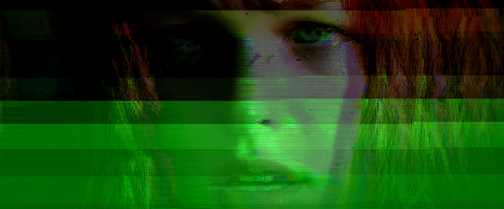
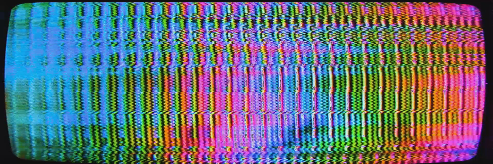

Analog Glitch Practice


Visual research into signal errors, compression artifacts, scan drift, and controlled distortion—built from a systems-first mindset.
Systems Thinking • Troubleshooting • Creative Discipline
I’m an entry-level Network and systems technician focused on troubleshooting, reliability, and continuous learning.
I have hands-on experience with hardware, operating systems, networking basics, and user support. I enjoy solving problems, documenting solutions, and improving systems.
I also work as a digital artist specializing in analog-inspired glitch art. That practice sharpens my attention to internal systems—understanding how things function at their core before intentionally pushing, breaking, and rebuilding them in controlled ways.


Visual research into signal errors, compression artifacts, scan drift, and controlled distortion—built from a systems-first mindset.


Suggested: a clean terminal screenshot, a network diagram, hardware setup, or a server-related visual that signals real troubleshooting and systems work.